Mac Peripheral Control
Visual reference atlas
Real retrieved app screenshots and manufacturer product views. Prepared for Aakash Puri, 7 November 2026. Read the complete Markdown brief for implementation instructions.
Historic Mac captures and current official guide images are labeled separately. No claim is made that these are captures from the new app.
R01. G HUB on Mac: mouse assignments
Verified Mac capture: traffic light window controls and Command shortcuts.
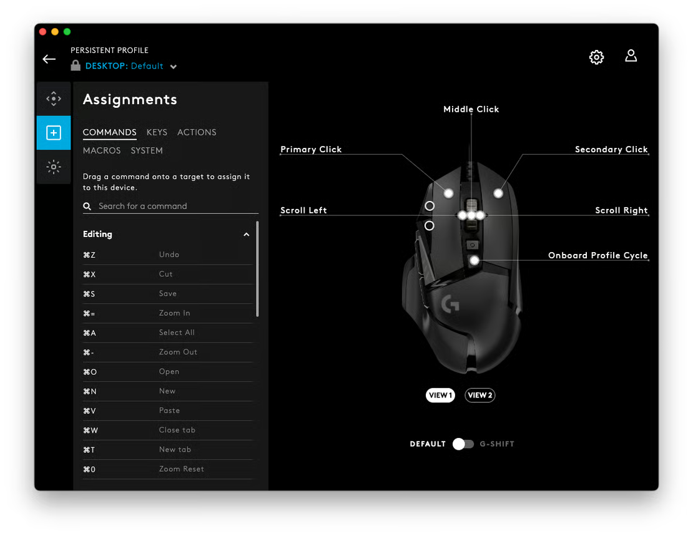
Primary composition reference: action library beside a large mouse, anchored callouts, view selection, and visible profile context.
Original source page · 2022-12-19
R02. Official G HUB: device dashboard
Official Logitech image with Windows window controls. Use its shared visual layout, not its window chrome.
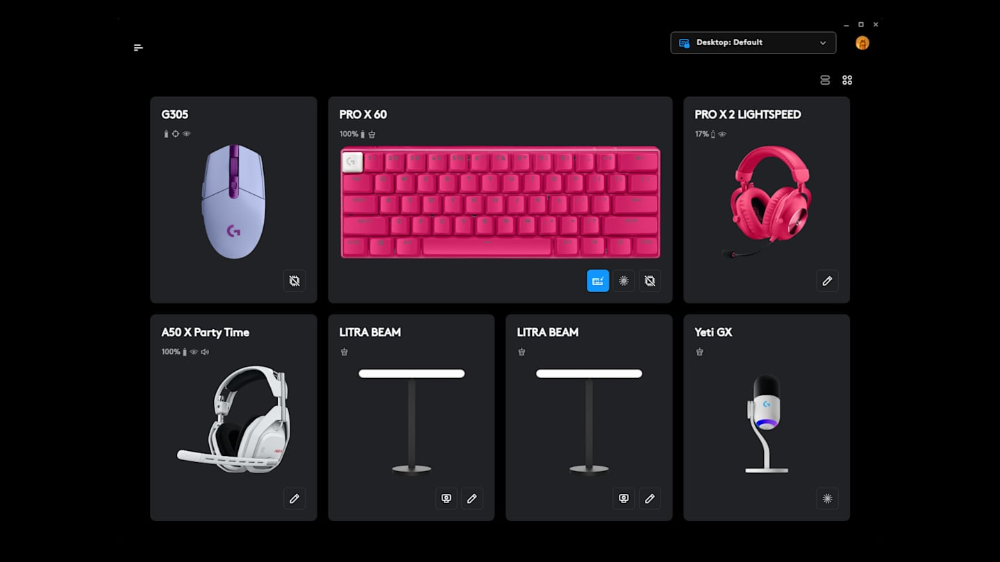
Reference for charcoal device cards, large real product images, restrained status, and the active profile selector. This is the underlying dashboard image used in the user supplied webpage screenshot.
Original source page · Undated source, retrieved 7 November 2026
R03. G HUB on Mac: discovered device card
Verified Mac capture: traffic light window controls and source explicitly about macOS.
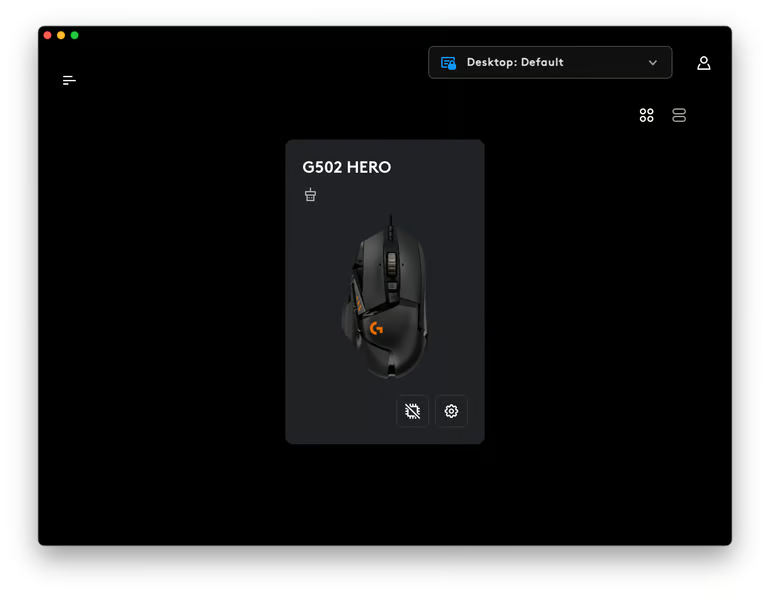
A single detected mouse is sufficient content. Preserve genuine connection state and a useful product card without invented devices.
Original source page · 2022-12-19
R04. G HUB on Mac: sensitivity and report rate
Verified Mac capture: traffic light window controls.
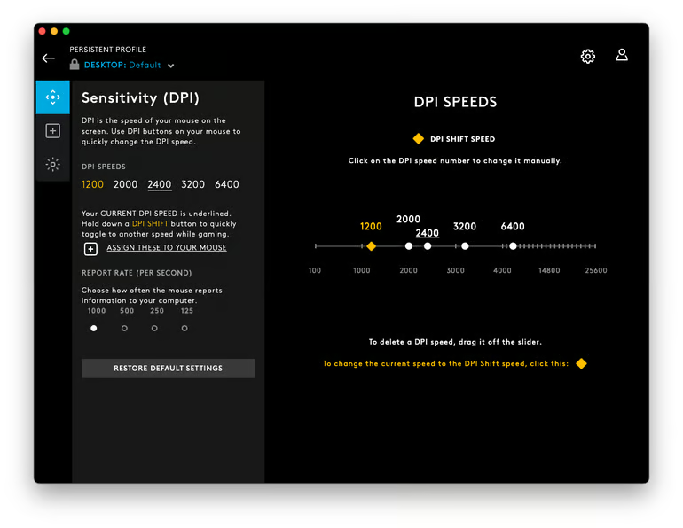
Use the clear numeric stages and feature navigation. Device ranges and report rates must come from the actual adapter.
Original source page · 2022-12-19
R05. G HUB on Mac: LIGHTSYNC editor
Verified Mac capture: traffic light window controls.
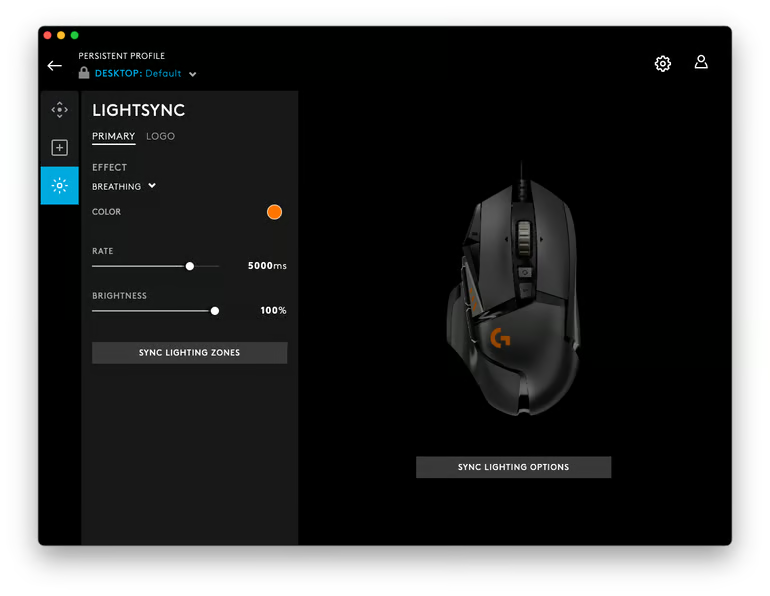
Reference for effect, color, brightness, rate, and a device preview. Preview and successful hardware application must remain distinct.
Original source page · 2022-12-19
R06. G HUB on Mac: device settings
Verified Mac capture: traffic light window controls.
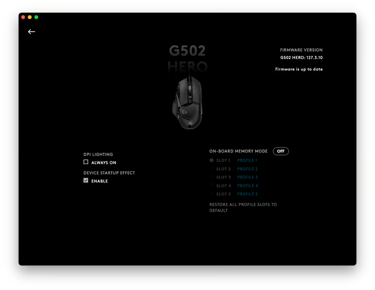
Reference for separating device identity, firmware information, and onboard profiles from everyday assignments.
Original source page · 2022-12-19
R07. Options+ on Mac: device callouts and application selection
Verified Mac capture: traffic light controls and Mac applications including Safari and AirPort Utility. Japanese interface.
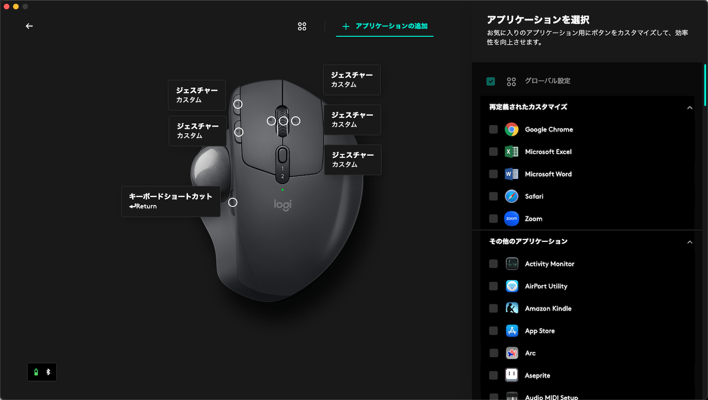
Use the large physical product, readable control labels, and application scope picker. Preserve native Mac application identity in the new implementation.
Original source page · 2024-02-16
R08. Options+ on Mac: physical mouse controls
Verified Mac capture: traffic light controls, Mac desktop, and source describing the author's Mac. French interface.
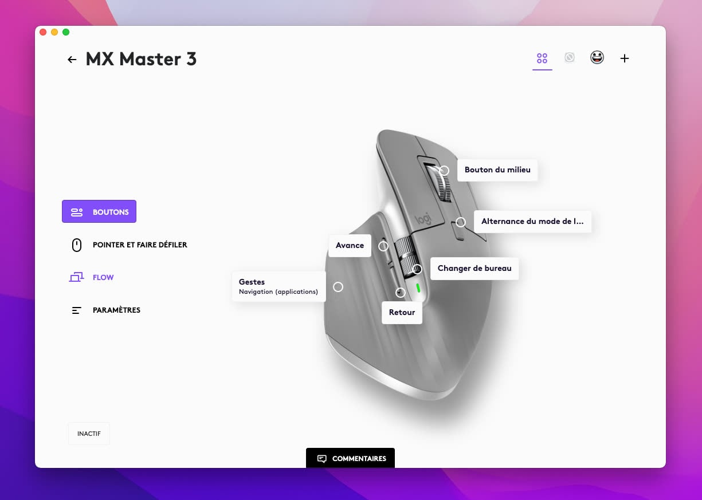
Use this for callout placement and physical control clarity. It is an older light appearance reference, not the target color theme.
Original source page · 2022-02-21
R09. Official KEYCONTROL: keyboard selection and layers
Official Logitech interface crop. Capture operating system and build are not established.
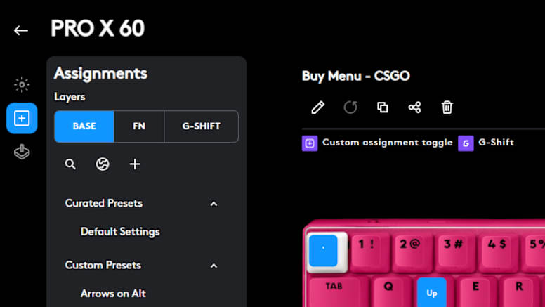
Reference for a selected physical key, mapping labels, and layer selection. The supplied crop is not evidence of a full Mac keyboard screen.
Original source page · Undated source, retrieved 7 November 2026
R10. Official KEYCONTROL: modifier assignment editor
Official Logitech interface crop. Capture operating system and build are not established.
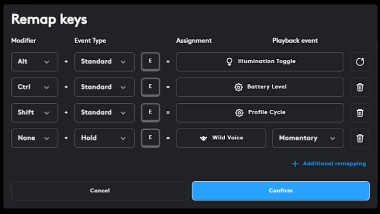
Reference for editing a key, modifier, event type, action, and playback behavior. Use Mac modifier names and only implemented behaviors.
Original source page · Undated source, retrieved 7 November 2026
R11. Kreo Chimera V2: black top view
Official product image from the current Chimera V2 page; honeycomb upper shell.
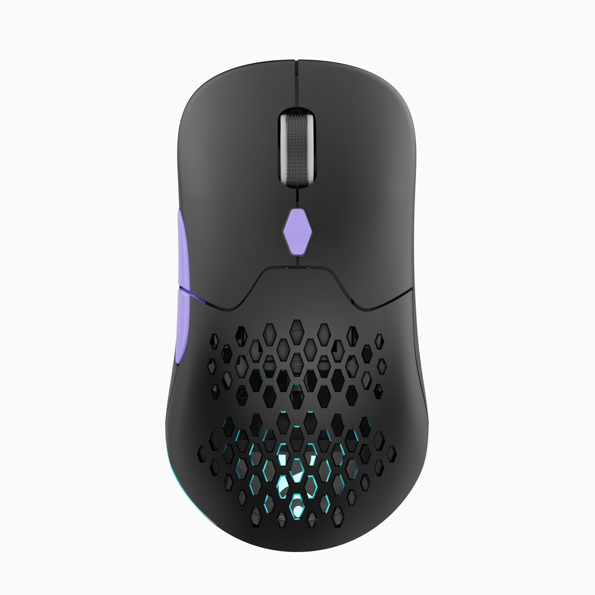
Starting asset for the top view. Confirm the actual color and removable shell. The picture does not establish HID button IDs.
Original source page · Undated source, retrieved 7 November 2026
R12. Kreo Chimera V2: black left side view
Official product image from the current Chimera V2 page; both thumb buttons are visible.
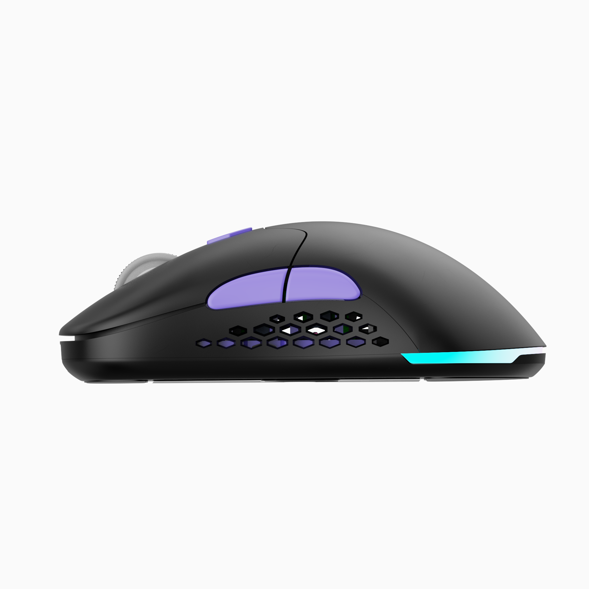
Primary side button editor reference. The front of the mouse points left in this image. Maintain front and rear physical identities when changing views.
Original source page · Undated source, retrieved 7 November 2026
R13. Kreo Chimera V2: black angled view
Official product image from the current Chimera V2 page; solid upper shell.
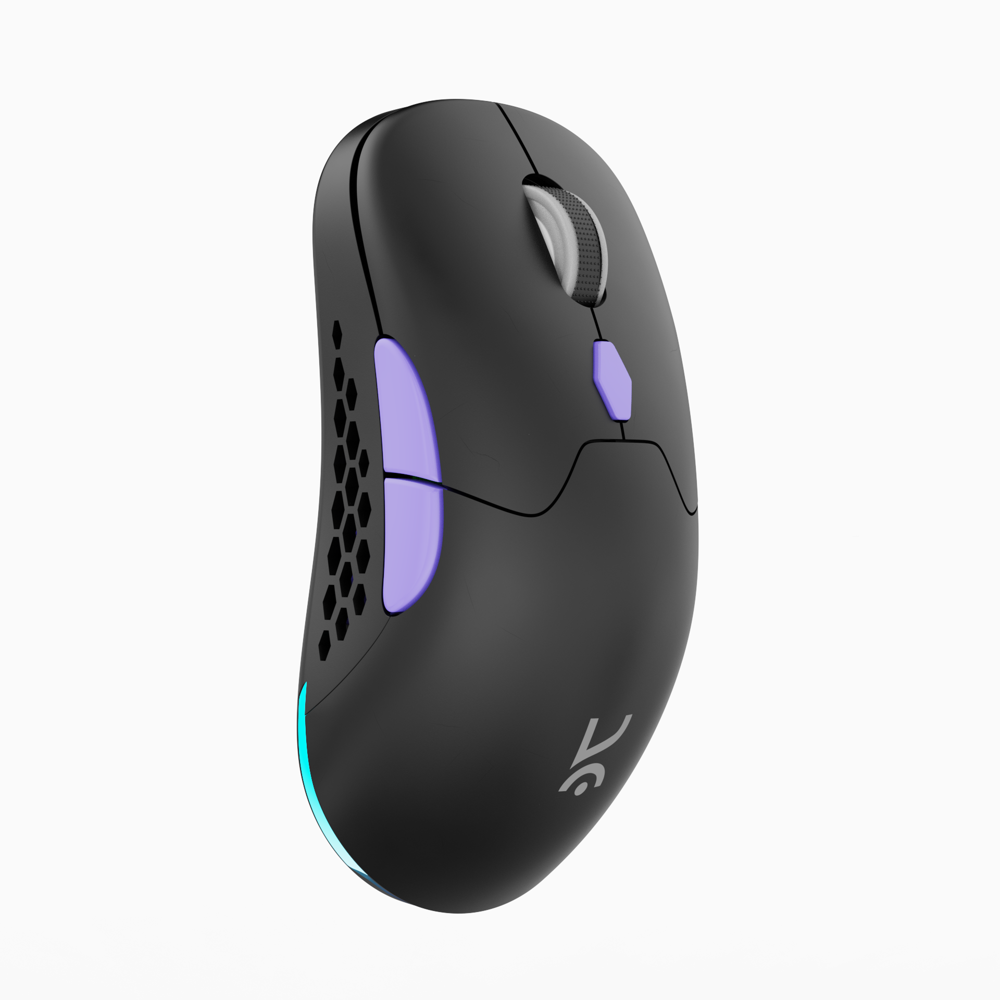
Optional overview with both side buttons visible. Match the removable shell before claiming an exact cosmetic representation.
Original source page · Undated source, retrieved 7 November 2026
R14. Kreo Chimera V2: white top view
Official product image from the current white Chimera V2 page; honeycomb upper shell.
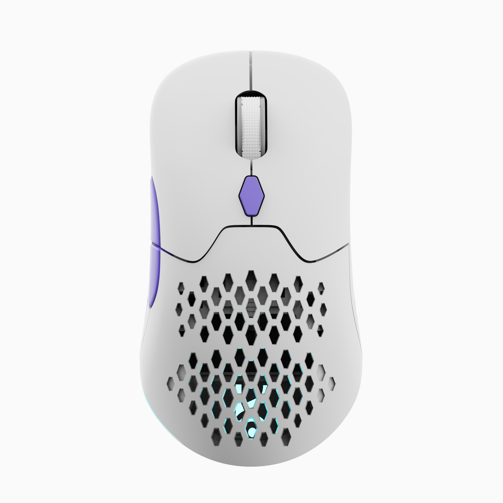
White variant reference. Color is unknown for the user's physical mouse until established; do not silently claim to have detected it.
Original source page · Undated source, retrieved 7 November 2026
R15. Kreo Chimera V2: white left side view
Official product image from the current white Chimera V2 page; both thumb buttons are visible.
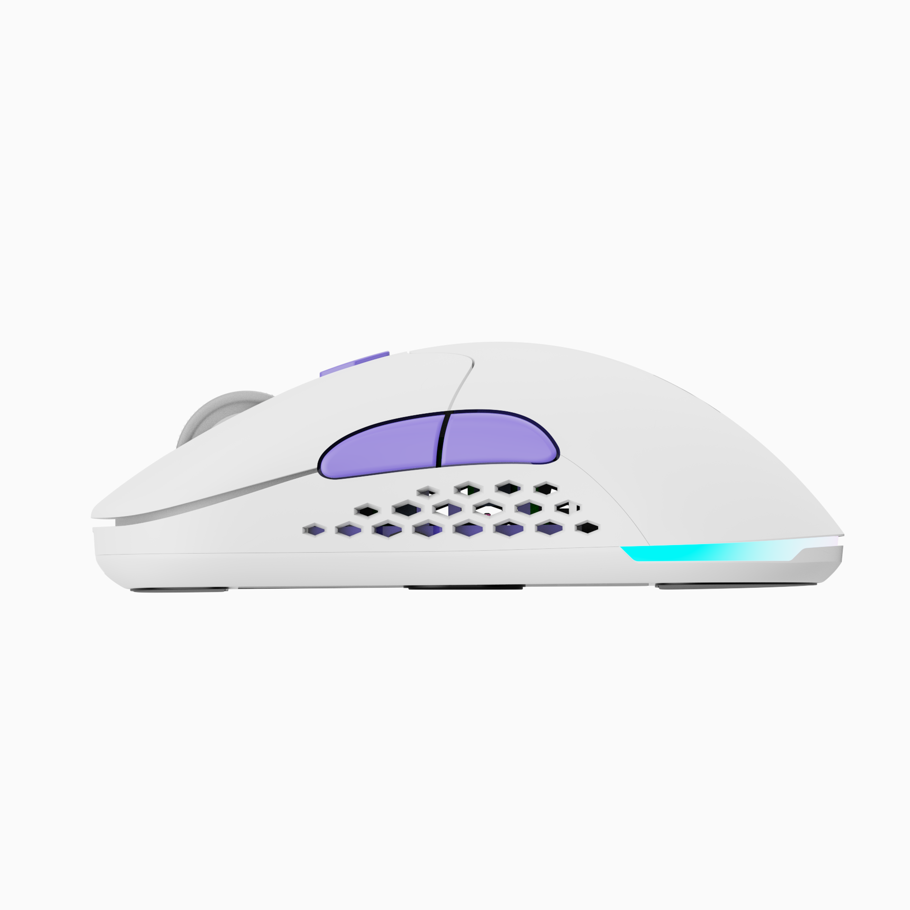
White side view for the same visual workflow. Retain its own image transform and validated hotspots.
Original source page · Undated source, retrieved 7 November 2026
R16. Kreo Chimera V2: white angled view
Official product image from the current white Chimera V2 page; solid upper shell.
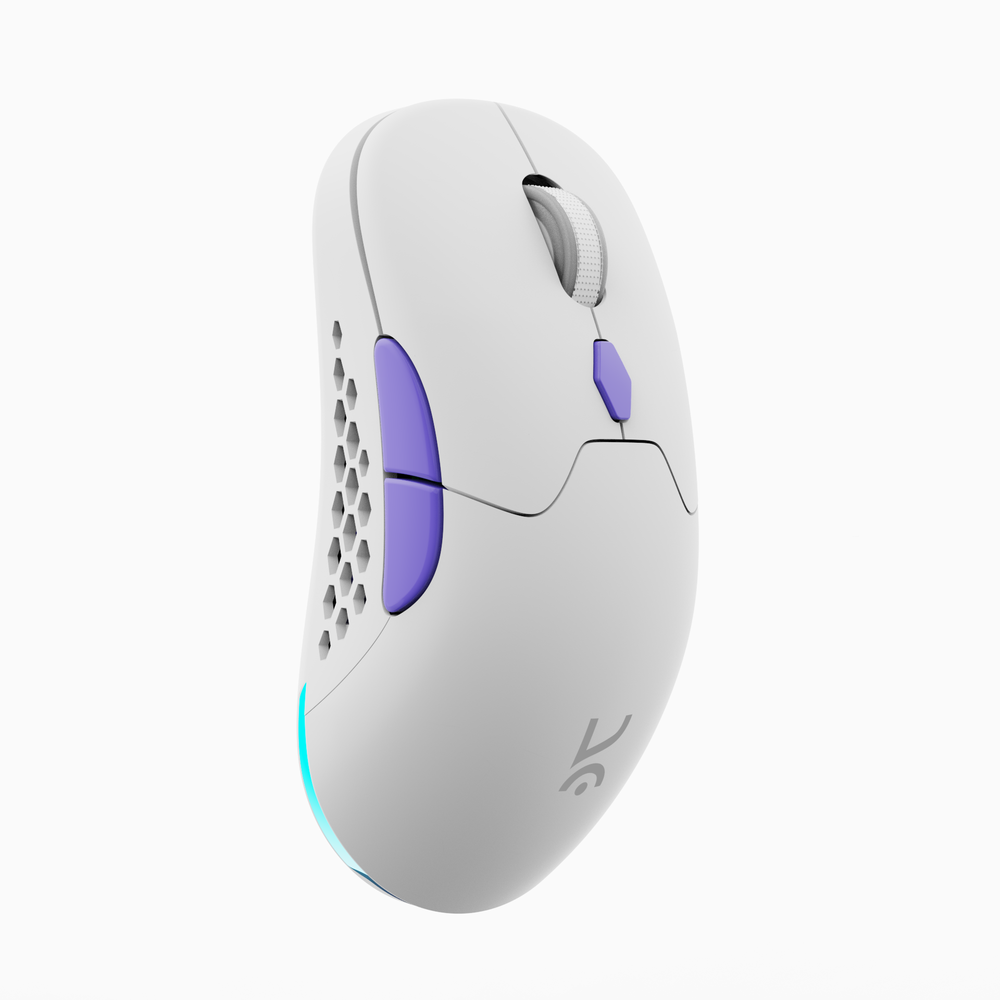
Optional white overview. These original product images have opaque near white backgrounds and require deliberate preparation for a dark stage.
Original source page · Undated source, retrieved 7 November 2026
R17. Options+ on Mac: Wave Keys visual editor
Verified Mac capture: traffic light window controls; the original review explicitly identifies Logi Options+ for macOS.
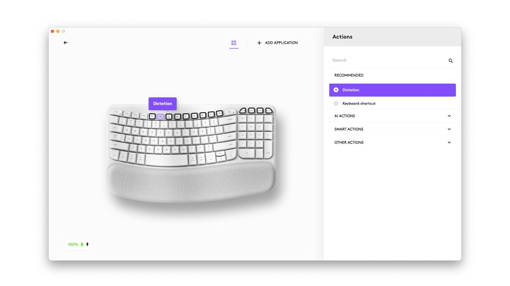
Full keyboard reference with a selected physical key and an action panel. Preserve the actual keyboard shape, spacing, and layout rather than drawing every keyboard as a generic rectangle.
Original source page · 2024-12-29
R18. Options+ on Mac: K380 key assignment
Verified Mac capture: traffic light controls; the original author describes this macOS configuration.
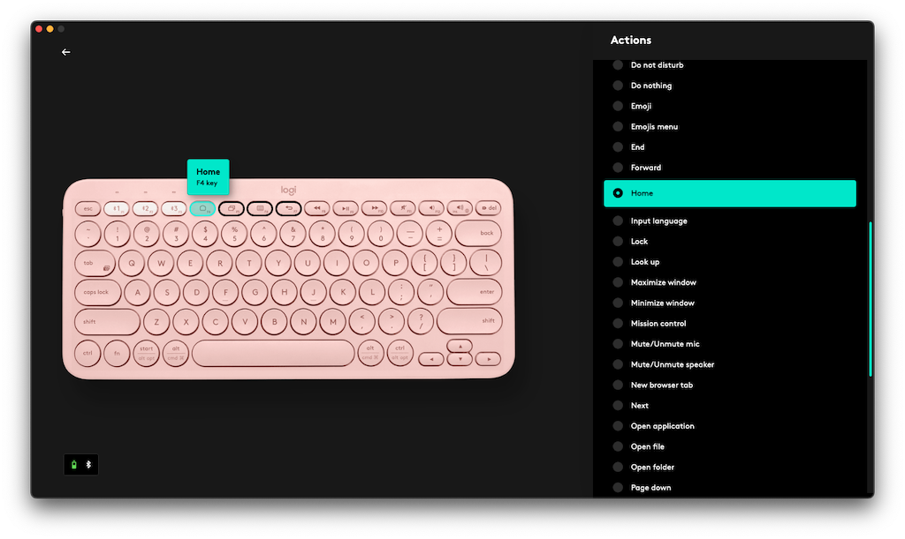
Recent dark keyboard editor reference. F4 is selected, its current Home action is labeled on the key, and the action list reflects that choice. Use this selected key to action relationship.
Original source page · 2025-03-03